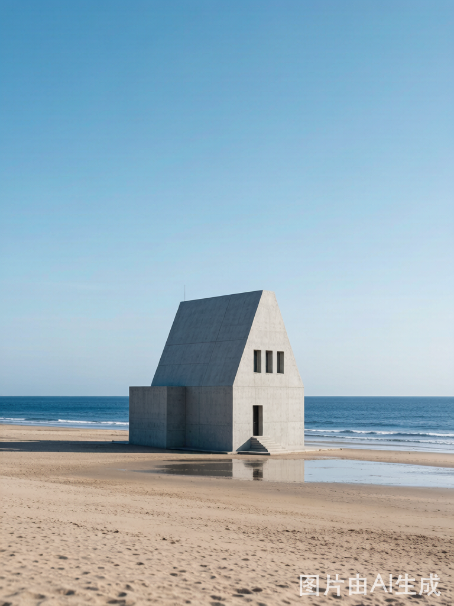

第一次来秦皇岛，先去这5个
从海滨度假到长城入海，从日出圣地到文艺海岸——这5个景点串起了秦皇岛的精华。
 TOP 1
TOP 1

 TOP 3
TOP 3
鸽子窝公园
鸽子窝公园是北戴河看日出的最佳地点。"鸽子窝日出"被誉为北戴河二十四景之首。鹰角石高约17米，形似雄鹰屹立。毛泽东曾在此写下《浪淘沙·北戴河》："大雨落幽燕，白浪滔天，秦皇岛外打鱼船……"
日出时间：夏季 4:50-5:20 / 春秋 5:30-6:10（建议提前30分钟到场占位）
建议游玩：1.5-2小时（日出后可逛公园）
交通：34路公交鸽子窝站下车即到
适合人群：摄影爱好者、情侣、亲子（公园内有鸽子）


TOP 5阿那亚 · 黄金海岸社区
阿那亚是中国最具文艺气息的海岸社区。孤独图书馆、海边礼堂（阿那亚礼堂）、沙丘美术馆……每一栋建筑都是艺术品。梵语"阿那亚"意为"人间寂静处，找回本我的地方"。由建筑师董功设计的孤独图书馆，落地窗正对大海，是中国第一座海边公益图书馆。
必打卡：孤独图书馆、海边礼堂、沙丘美术馆、海边市集、犬舍酒店
预约方式：关注"阿那亚"微信公众号 → 社区服务 → 图书馆预约（旺季需提前3-5天）
交通：北戴河站打车约30分钟；社区有接驳车需提前预约
注意：封闭社区，不预约/不消费可能进不去
北戴河区 · 7大景区
中国四大避暑胜地 · 最美海滨度假区

老虎石海上公园
北戴河最经典的海滨公园，因海边一块形似老虎的巨石而得名。沙滩细腻平缓，适合游泳、赶海。夕阳西下时，金色阳光洒在巨石上，是北戴河最美日落观赏点。
适合：游泳、赶海、拍照、遛娃
最佳时间：下午4-6点看日落，退潮时赶海
交通：34路/5路老虎石站
费用：公园免费，更衣/淋浴约10元
联峰山公园
联峰山是北戴河制高点，也是中国第一座森林公园。望海亭可俯瞰整个北戴河海滨全景，秦皇岛港、鸽子窝尽收眼底。山中松柏苍翠，负氧离子极高，是天然氧吧。
必看：望海亭（最佳观景点）、莲花石、仙人洞、神山
建议游玩：2-3小时
交通：5路/15路联峰山公园站
适合人群：登山爱好者、摄影爱好者、避暑纳凉


碧螺塔海上酒吧公园
北戴河夜生活地标！海上酒吧+烟花秀+篝火晚会+乐队演出。碧螺塔三面环海，塔顶是绝佳的日落和星空拍摄点。"圣托里尼"风的白墙蓝顶建筑让这里成为拍照圣地。
亮点：夜间篝火晚会（19:30开始）、海上酒吧、热气球装置、栈道夜景
最佳时间：下午4点到晚上10点（看日落+夜景+表演）
交通：15路碧螺塔站
适合人群：情侣、年轻人、夜生活爱好者
怪楼奇园
一座充满奇思妙想的建筑群，内部结构错综复杂，有999个门、999扇窗，像个巨大的迷宫。每个房间都有不同的主题——有的地板是斜的，有的镜子无限反射，特别适合带孩子探险。
适合：亲子探险、建筑爱好者、好奇心玩家
建议游玩：1-1.5小时
交通：5路怪楼站
注意：迷宫较复杂，带好小孩别走散


秦皇岛野生动物园
华北地区最大的野生动物园之一，占地5000余亩。可自驾入园穿越猛兽区，近距离观赏老虎、狮子、黑熊。温顺区可步行投喂长颈鹿、羊驼等动物。
游玩方式：自驾（推荐，约2小时）/ 园区小火车
必看：猛兽区（虎/狮/熊）、草食区（长颈鹿/斑马）、鸟林
交通：34路野生动物园站
适合人群：亲子家庭、动物爱好者
山海关区 · 6大景区
万里长城第一关 · 世界文化遗产核心区

角山长城
角山是万里长城翻越的第一座山，素有"万里长城第一山"之称。长城沿山脊蜿蜒而上，登顶可远眺山海关全景和渤海湾。秋季红叶似火，是摄影爱好者的天堂。
海拔：519米，登山约1.5-2小时
建议游玩：2-3小时，需一定体力
交通：山海关古城打车约15分钟
最佳季节：秋季（9-10月）红叶最美
孟姜女庙（贞女祠）
又称贞女祠，位于山海关城东凤凰山上，始建于宋代。供奉着中国四大民间传说之一的孟姜女。庙内有"望夫石"和108级台阶，每级代表一种苦难。正殿楹联"秦皇安在哉，万里长城筑怨；姜女未亡也，千秋片石铭贞"被誉为天下第一奇联。
必看：望夫石、108级台阶、天下第一奇联
建议游玩：约1小时
交通：山海关古城打车约10分钟
适合人群：文化爱好者、亲子研学


乐岛海洋王国
华北地区最大的海洋主题乐园之一。集海洋动物表演、水上乐园、游乐设施于一体。海豚、海狮、白鲸表演每日多场，夏季水上乐园开放，是家庭出游首选。
必看：海豚表演、海狮秀、白鲸互动、水上乐园（夏季）
建议游玩：一整天
交通：25路/35路乐岛站
适合人群：亲子家庭、情侣、水上项目爱好者
长寿山景区
以"寿"文化为主题的自然风景区。悬阳洞是中国北方最大的天然花岗岩石洞，洞中有洞。山中摩崖石刻以历代名家书写的"寿"字为主题，是祈福延寿的打卡胜地。
必看：悬阳洞（北方最大天然花岗岩石洞）、寿字碑林、神医石窟
建议游玩：2-3小时
交通：山海关打车约25分钟
适合人群：中老年游客、文化爱好者、登山爱好者


燕塞湖（石河水库）
被誉为"北方小桂林"，青山环抱一池碧水。湖中有鸟语林，栖息着百余种珍禽。可乘船游湖，两岸奇峰怪石倒映水中，是北方难得的山水画卷。
游玩方式：乘船游湖（约40分钟）+ 鸟语林步行
建议游玩：2-3小时
交通：山海关打车约20分钟
适合人群：全家出游、摄影爱好者、自然爱好者
海港区 · 4大景区
城市中心 · 港口文化与海洋探索
秦皇求仙入海处
据传是秦始皇东巡求仙的入海处，秦皇岛市名即源于此。景区内有巨型秦始皇雕像、求仙殿、战国风情园。临海而立，可感受两千年前帝王求仙问道的历史情境。
看点：秦始皇雕像（高6米）、求仙殿、祈福广场、战国风情园
建议游玩：1.5-2小时
交通：8路求仙入海处站
适合人群：历史爱好者、亲子研学


新澳海底世界
拥有亚洲最长的海底观光隧道（全长80米），鲨鱼、鳐鱼、海龟从头顶游过。还有海豹、企鹅等极地动物馆。每天有美人鱼表演和海狮表演，是亲子科普的绝佳去处。
必看：80米海底隧道、美人鱼表演（每日3场）、海狮秀、企鹅馆
建议游玩：2-3小时
交通：19路/32路新澳海底世界站
适合人群：亲子家庭、海洋爱好者
南戴河 · 昌黎 · 北戴河新区
文艺海岸 · 黄金沙滩 · 温泉度假

南戴河 · 黄金海岸
被誉为"沙漠与大海的吻痕"，拥有中国最优质的天然沙质海岸之一。沙细、滩缓、水清、潮平。国际滑沙中心是国内最大的滑沙场，从沙丘滑下直冲大海的体验独一无二。
娱乐：滑沙（必玩！）、滑草、水上摩托、香蕉船
建议游玩：半天到一天
交通：22路公交或打车，距北戴河30公里
适合人群：年轻人、亲子、水上运动爱好者
渔岛海洋温泉景区
集温泉、水上乐园、海洋娱乐于一体的大型综合度假区。室内外温泉池数十个，夏有水上乐园，冬有温泉暖浴。薰衣草庄园花季（6-8月）美如普罗旺斯。
特色：海水温泉（含多种矿物质）、水上乐园、薰衣草庄园（6-8月）、滑沙
建议游玩：一整天
交通：北戴河打车约40分钟
适合人群：全家度假、情侣、温泉爱好者


圣蓝海洋公园
综合性海洋主题公园，拥有海底观光、海洋动物表演、4D影院、游乐设施等。海豚剧场和白鲸表演是最大亮点，与海洋动物零距离接触的互动体验深受孩子喜爱。
必看：海豚剧场、白鲸表演、海底隧道、4D影院
建议游玩：3-4小时
交通：北戴河新区打车约30分钟
适合人群：亲子家庭、海洋爱好者
碣石山
千古名山！曹操"东临碣石，以观沧海"即在此所作。主峰仙台顶海拔695米，登顶可俯瞰渤海。秦始皇、汉武帝、唐太宗等帝王均曾登临碣石，是中国古代帝王祭海的名山。
海拔：695米，登山约2小时
必看：仙台顶（观海最佳点）、水岩寺、碣石门
交通：昌黎县城打车约30分钟
适合人群：登山爱好者、历史文化爱好者

抚宁区 · 青龙县 · 自然秘境
原始森林 · 长城峡谷 · 北方名山

祖山风景区
素有"北方群山之祖"之称，主峰天女峰海拔1428米。原始森林覆盖率达96%，负氧离子浓度极高。春有杜鹃花海，夏可避暑纳凉，秋赏红叶满山，冬观雾凇冰挂。云海日出堪称一绝。
必看：天女峰（云海日出）、十里画廊、画廊谷、情人谷
建议游玩：一整天（可乘缆车节省体力）
交通：秦皇岛市区打车约1小时
适合人群：登山爱好者、摄影爱好者、避暑度假
冰塘峪长城风情大峡谷
因峡谷中夏季仍有冰瀑而得名——夏季三伏天谷内仍有残冰，是北方罕见的地质奇观。峡谷两侧长城蜿蜒，溪流潺潺，玻璃栈道悬于峭壁之上，惊险刺激。
亮点：夏季冰瀑奇观、玻璃栈道（长200米）、峡谷漂流、长城遗迹
建议游玩：3-4小时
交通：秦皇岛市区打车约1小时
适合人群：探险爱好者、亲子、避暑纳凉


板厂峪长城景区
明朝修筑长城的"后勤基地"。2002年出土了600座明代砖窑遗址和世界唯一的"斑鬣狗"化石。倒挂长城段险峻壮丽，是长城摄影的宝藏取景地。秋季红叶与长城交织如画。
必看：明代砖窑遗址群（全国唯一）、倒挂长城、斑鬣狗化石展览
建议游玩：3-4小时
交通：秦皇岛市区打车约50分钟
适合人群：长城爱好者、摄影爱好者、考古迷
更多值得探索
分布在各区的特色小景点

集发农业梦想王国
农业主题乐园，温室花园+萌宠+游乐设施，亲子研学首选。

北戴河湿地公园
中国城市最大湿地之一，400+种鸟类栖息，观鸟、摄影胜地。

秦皇岛港口博物馆
百年港口历史，工业遗址改造的文创园区，拍照出片。

蔚蓝海岸
新兴文艺海岸社区。猫的天空之城书店+海边秋千+冲浪。

南戴河国际娱乐中心
大型综合游乐场，过山车+摩天轮+水上世界，适合年轻人。

戴河生态园
沿戴河而建的湿地公园，木栈道+荷花池+垂钓，悠闲半日。